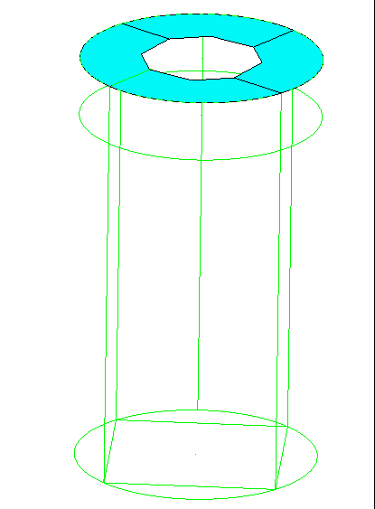
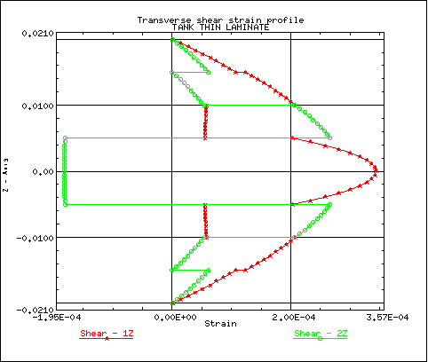
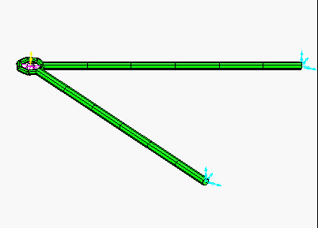
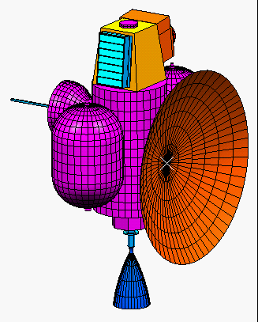

Meshing the Pluto Express Satellite
Model
Vision - Leveraging
the feature replacement tools to move analysis forward in the development
cycle.
If the development of data is to occur in a package other than I-DEAS
Master Series, we can still use SDRC tools to move the analysis further
forward in the design process, without risking our work. In other
words, even if the design team passes us a design change that includes
a significant topological change, we are able to leverage work we have
previously done using the replace feature command.
|

|
Section meshing -
Achieving the simplification
or abstraction needed for FEM in the meshing task
 |
|
The original model of the knuckle that
was provided had many small sliver surfaces and tiny details. For
our analysis, we needed to mesh the entire knuckle by combining the surfaces
in some areas (to get rid of slivers, etc.) and ignoring small features
that were inconsequential to our analysis.
|
Meshing Techniques - Tools
to use wire frame and surfaces to generate free and mapped meshes
| Midplane generation - The bus has a louvered intake
area for operation during ground testing. This solid model would
be best modeled using thin shell elements. The I-DEAS Master Series
provided the tools to not only capture the midplane representation of the
geometry, but it also captured the thickness data of the vanes so that
the resulting FEM would accurately reflect the tapering of each vane. |

|

|
Geometry Clean-up - The geometry of the
bus, provided by the supplier, had many inconsistencies. These included
curve endpoint overlaps and gaps. The I-DEAS Master Series provided
the tools to generate surfaces on this geometry without the need to fix
the geometry. These tools included "stop at intersection" and a gap
convergence tolerance. |
| Meshing - The I-DEAS Master Series provided tools
to generate a mesh on the geometry. This included free or mapped
meshing between curves, mapped meshing of surfaces with more than 4 edges
and volumes with more than 6 faces (called n-sided mapped meshing), and
creating a transitional mapped mesh. Additional meshing control allows
for free mesh transition due to surface curvature, feature proximity, or
user desired localized size. Mapped meshing can also be biased to
provide the user with their desired mesh. Finally, the tools exist
to do non-geometric creation of nodes and elements should the user desire
to do so. |

|

|
Non-Geometric Elements - The I-DEAS Master Series
provides the tools to use reference points and reference point series to
generate rigid elements, lumped masses, and springs. This tie of
non-geometric elements to geometric points allows for easy definition of
node locations for any number of applications, such as spot weld conditions,
while also providing history support of the definition. |
Advanced Meshing Tools - Meshing
and Analysis of Laminates, Beams, and Systems (Assemblies)
|

|
Laminates - The I-DEAS
Master Series provided tools to generate a composite, verify it (graphically
and by table), solve it, and then recover ply stresses and failure indices
for post processing. These can be viewed by layer (contour plots).
Calculation of in-plane and transverse shear failure envelopes can be plotted
as well.

|
Beam Modeling - Beam cross
section geometry can be generated from solid model or wireframe geometry,
or can be chosen from a list of standard shapes. Beams are displayed
showing the section geometry, orientation and offsets to ensure that they
are applied to the finite elements model correctly.

|

Beam results can include "Shear-moment" type plots for force and stress
components. Stress contours can also be generated on the beam cross
sections. |
| Assembly meshing - The
tools that allow you to "gather" finite element models of instances in
an assembly, based upon the assembly configuration, in a single finite
element model for a "system" analysis. FEM's are automatically placed
in the proper orientation, and they retain geometry associativity and design
history. |

|
|